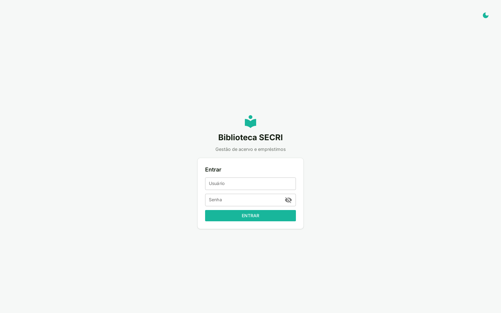
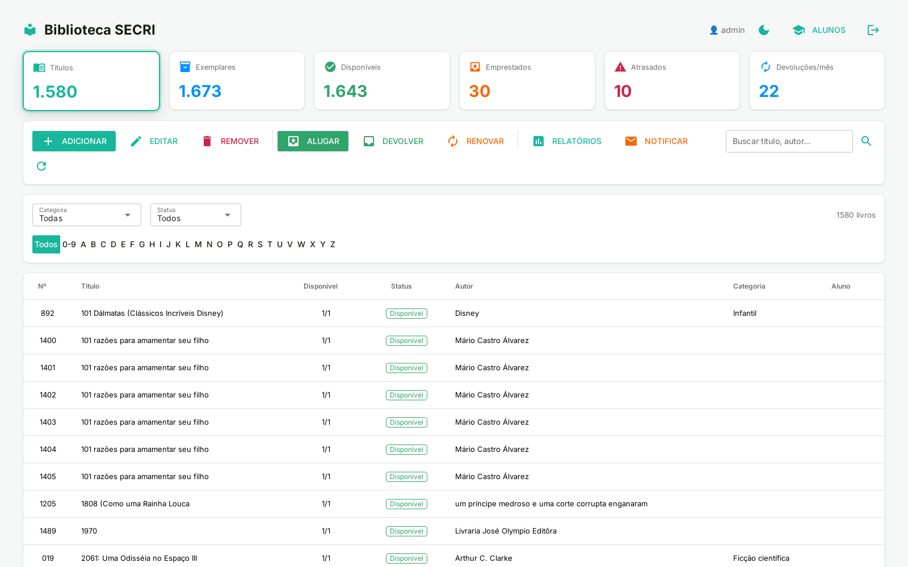
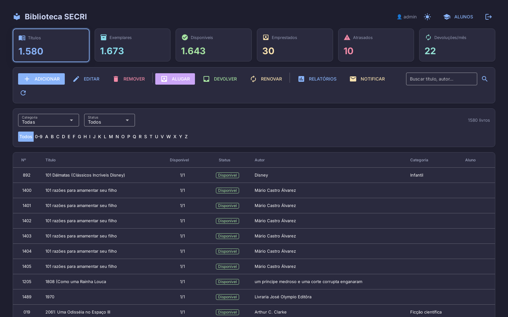
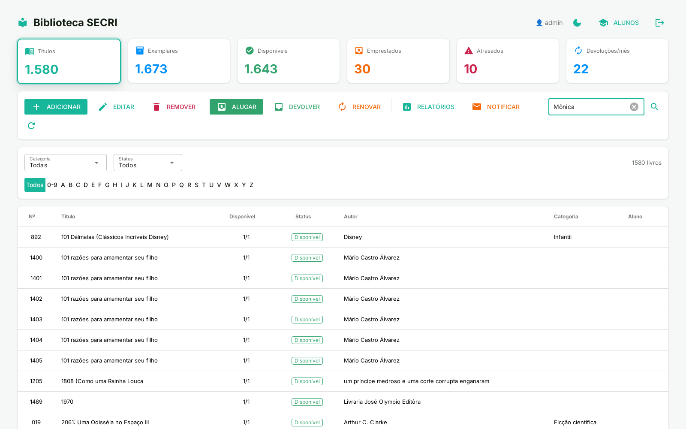
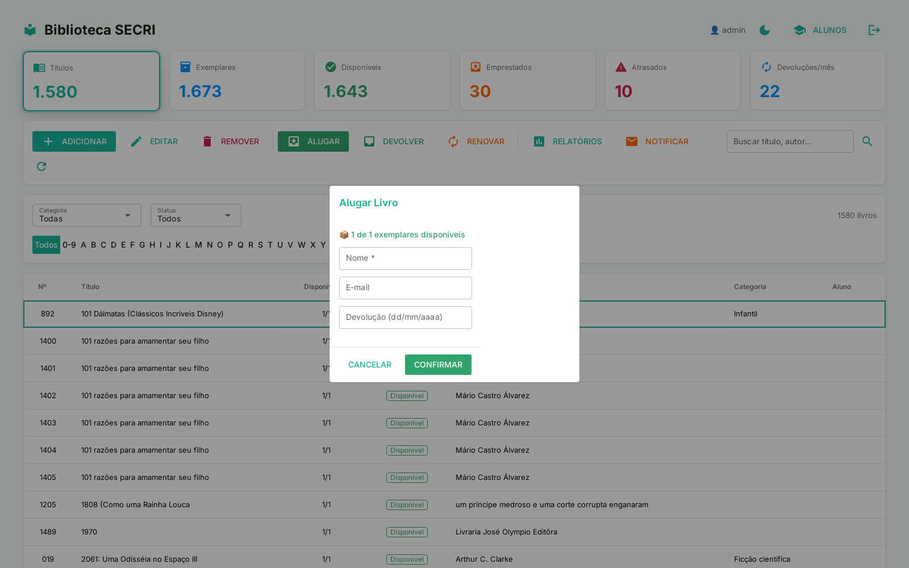
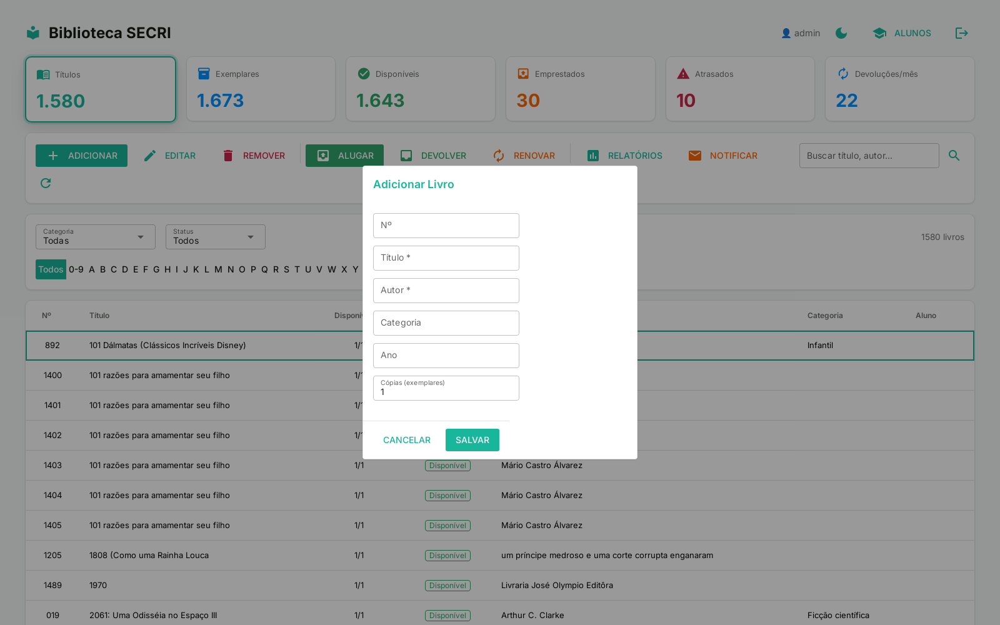
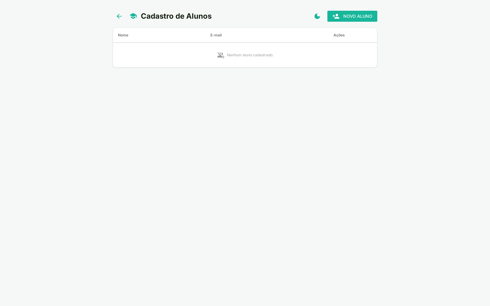
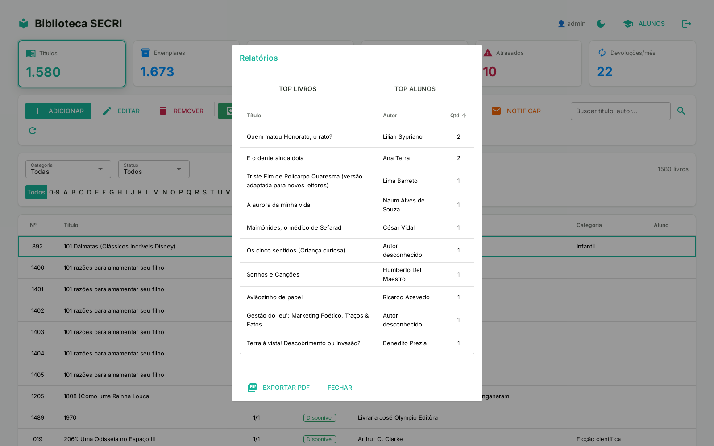

Biblioteca SECRI
Como usar o sistema
O que é o sistema
É onde a gente controla os livros da biblioteca:
quem levou, quando precisa devolver e o que ainda tem disponível.
Funciona no navegador, igual abrir um site.
Entrar

- Abra o navegador e digite o endereço do sistema
- Coloque o usuário e a senha, e clique em Entrar
A tela principal

Em cima os números, no meio os botões e a busca, embaixo a lista de livros.
Os números de cima
Título é o nome do livro. Exemplar é cada cópia física —
um mesmo título pode ter várias.
Clicando num número, a lista embaixo já filtra por ele.
Tela clara ou escura

O botão de sol/lua no canto de cima troca entre as duas.
Encontrar um livro

- Pela busca: digite o título ou o autor e aperte Enter
- Pelas letras A–Z: mostra os livros que começam com aquela letra
- Pelos filtros de categoria e situação
Entendendo a lista
A coluna "Disponível" diz quantas cópias estão livres sobre o total (ex.: 1/1).
A situação aparece colorida:
Disponível
Esgotado
Atrasado
Emprestar um livro

- Clique na linha do livro para marcá-lo
- Clique em Alugar
- Digite o nome do aluno (e-mail e data são opcionais)
- Clique em Confirmar
Devolver e renovar
Para devolver: marque o livro, clique em Devolver e confirme.
Para renovar: marque o livro, clique em Renovar e escolha a nova data.
Quando você devolve, a cópia volta a ficar disponível na hora.
Cadastrar um livro

- Clique em Adicionar e preencha título e autor (os dois são obrigatórios)
- Em Cópias, coloque quantos exemplares desse livro a biblioteca tem
- Para corrigir, use Editar; para tirar da lista, use Remover
Cadastro de alunos

- Entre pela opção Alunos, no topo da tela
- Clique em Novo Aluno e preencha nome e e-mail
- Depois, na hora de emprestar, o nome já aparece como sugestão
Relatórios

Mostra os livros e os alunos que mais aparecem. Dá para exportar em PDF.
Dúvidas comuns
- Apareceu "Esgotado": todas as cópias estão emprestadas, é só esperar uma devolução.
- Atrasos: o sistema avisa os alunos por e-mail sozinho.
- Errou alguma coisa: dá pra editar ou devolver, nada fica travado.
- Fechou sem querer: abra o endereço de novo e entre.
É isso!
Qualquer dúvida, é só me chamar.